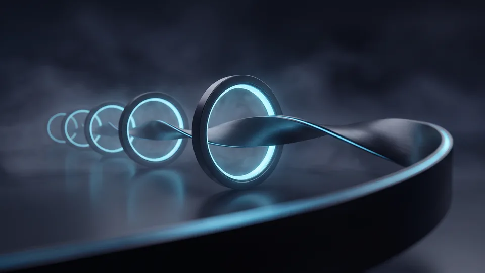

Which Stages Does the Graphic Design Process Consist Of?
The graphic design process consists of five stages: brief, discovery, concept, revision and delivery. On a small job that flow finishes in ten working days. On extensive projects such as a corporate identity it stretches to six weeks. The order of the stages doesn't change; only the number of days given to each step shortens or widens with the size of the job. We recommend building your schedule around those five headings.
Even though the number of stages is fixed, the load on each step varies. We build the skeleton of the graphic design process in this order:
- Brief: we put the target audience, the message and the constraints in writing.
- Discovery: we scan competitors' visuals and your existing brand assets.
- Concept: we present two or three different directions in draft.
- Revision: we mature the direction you chose through feedback.
- Delivery: we format the print and digital outputs.
We manage all five steps on a single schedule as part of our graphic design service offering.
Why Aren't the Stages Skipped?
If discovery is skipped in the process, the design team gets stuck at the concept presentation. The team misses the direction, and the client can't explain what they dislike. In that situation you face a two-week turnaround. A short round of discovery spends three days and gains ten.
What Changes the Total Time?
The size of the job, the number of decision-makers and the need for printing are the three variables setting the time. A single poster finishes in a week. A package covering a logo, business cards, packaging and social media templates, on the other hand, comes to six weeks. Writing the scope down at the start fixes the schedule at the start too.
How Long Does the Brief Stage Take?
The brief closes within two to five working days. If your brand team settles the goals, the areas of use and the people who will give approval, the time drops to the lower bound. As the number of decision-makers rises, the diary of meetings widens and the requirements document takes a week. Jobs that start without a written brief burn twice the time at the steps that follow.
The brief is the requirements document gathering the project's goal and its limits into a single file. It contains the brand promise, the target audience, the channels of use and the delivery date. We don't fill that document in ourselves; we fill it in with you. In the graphic design process the first loss of days usually starts here. If social media visuals are in scope too, we bring our social media management team into the same meeting. The decisions you take in a single sitting set the rhythm of the following three weeks.
Three Pieces of Information That Speed the Brief Up
The source versions of your logo files, your corporate colour codes and your list of competitors. With those three inputs ready, the first meeting finishes in ninety minutes. Without them, the team needs three more days to gather data. Preparation is the cheapest way of speeding a design process up.
Define the Approval Chain at the Start
How many people will give approval? A single name, or a committee? Write the approval chain down on the day of the brief. A committee of three adds an average of two days to every round of revisions.
How Does Time Flow in the Concept Stage?
The team works five to eight working days in the concept stage. In the first three days it produces sketches; in the remaining days it prepares two strong directions for presentation. The presentation meeting takes half a day. If we get the feedback within the same week, the flow moves into revision without losing pace. An approval left waiting extends the schedule day for day.
The concept is the first concrete proposal turning the brand's message into a visual direction. This is the most creative step of the graphic design process; we test typography, colour and composition decisions together. As the number of businesses going digital grows, so does the need for a visual identity; the Ministry of Trade's e-commerce outlook report sets that expansion out through the number of businesses. For general data on the sector we also follow the publications of TurkStat — Türkiye's statistical institute.
How Many Concepts Is It Right to Present?
Two or three directions are enough. Five concepts lengthen the time to a decision and scatter the team's focus. In the presentation we explain in a single sentence which need each direction answers. That way the meeting moves out of a discussion of taste and into a conversation about the goal.
Who Runs the Presentation Meeting?
The meeting is run by the lead of the design team. We assess each direction in terms of the goal, the message and the channel. If the decision comes out the same day, the schedule moves forward by a day. If the approval drags into a week, the delivery date slips by as much.
Why Do Rounds of Revisions Lengthen the Schedule?
Each round of revisions adds two to four working days on average. The source of the delay isn't the drawing but the feedback arriving piecemeal. This is where the graphic design process stretches most. Notes coming separately from different people push the team into doing the same work twice. Consolidated, written feedback gains a day per round.
A revision is the round of correction in which the concept you chose is sharpened by feedback. In the contract we define two rounds; a third round means extra time and extra budget. We ask you to gather the notes into a single file. Instead of “make this bit a little livelier”, measurable sentences such as “the product name on the packaging can't be read from a distance” speed the work up. A measurable note lets the team make the right move at the first attempt. If the same visuals will appear on your corporate site too, we run the notes jointly with our corporate web team.
Write the Number of Revisions into the Contract
If the number of rounds is vague, the schedule stays vague too. In our quote we state the number of rounds, the duration of each round and the feedback window explicitly. That way you can write the launch date into the diary with confidence.
What Is the Feedback Window?
The feedback window is the three-day period after the presentation in which you send the notes. Once the window closes, the team moves to the next round. If the notes come late the round doesn't start and the schedule slips by the same amount. We discuss that rule right at the start.
“The number of businesses trading online, 600,800 in 2024, rose to 634,611 in 2025.”
— Ministry of Trade, The Outlook for E-Commerce in Türkiye 2025
How Many Days Does the Delivery Stage Take?
The delivery step after approval takes one to three working days. The team separates the design into print and digital formats, checks the colour profiles and archives the source files. If a press proof is needed we add two more days. If the use is digital only, we finish the handover of files the same day. At this step we don't want surprises.
Delivery is the handover of files in which the approved design turns into files ready for use. We give you both the editable source file and PDF, PNG and vector outputs. If you want brand guidelines, we set aside two more days. This last step of the graphic design process looks short, yet the order of the files determines the starting speed of every future job. A well-built archive also shortens the brief stage of the next project.
Why Does the Archive Matter?
When you want a new poster six months later, the team doesn't start from scratch. A tidy archive halves the time on similar graphic jobs. We recommend keeping the files both with us and with you.
Extra Time on Jobs Going to Print
A press proof is the physical test showing how the job looks on the actual paper. The proof takes two days and the correction one. If you have a print plan, write those three days into the schedule from the very start.
Start Your Design Process with a Professional Team
Brands wanting a clear schedule start with the quotation step. Send us the scope and your target date and, within two working days, we share a stage-by-stage schedule and a price. The plan says what happens on which day. That way you base your launch on a date rather than a guess. We also explain the ways of shortening the time together.
As an agency we run the graphic design process with a single point of responsibility; you always know who to speak to at each step. A short conversation is enough to settle the scope. The quote form is there to fill in and send us your requirement, or you can reach us directly through our contact page. In the first meeting we draw up the schedule together, and then we get to work.
What Do We Discuss in the First Meeting?
We discuss your goal, your delivery date and your budget range. A twenty-minute conversation is enough to settle the scope of most projects. After that we send the stage-by-stage schedule in writing. If you approve the plan, we move to the brief meeting within the same week.

Stage-by-stage duration and responsibility table
| Stage | Typical duration | What we need from you | Cause of delay |
|---|---|---|---|
| Brief | 2–5 working days | The goal and the approval chain | Too many decision-makers |
| Discovery | 2–3 working days | Competitor and brand files | An incomplete visual archive |
| Concept | 5–8 working days | A shared diary slot for the presentation | The team gathering late |
| Revision | 2–4 working days per round | Consolidated written feedback | Notes arriving piecemeal |
| Delivery | 1–3 working days | Format and print details | Waiting for the press proof |
Knowing the time is half of managing the project. See in advance how many days each step from brief to delivery will take and you set your launch date on firm ground. In the graphic design process the greatest gain in speed happens with brands that come prepared. Gather your files, settle your approval chain, decide who takes the decision; we'll plan the rest together. When the schedule is clear, the design gets clear too.